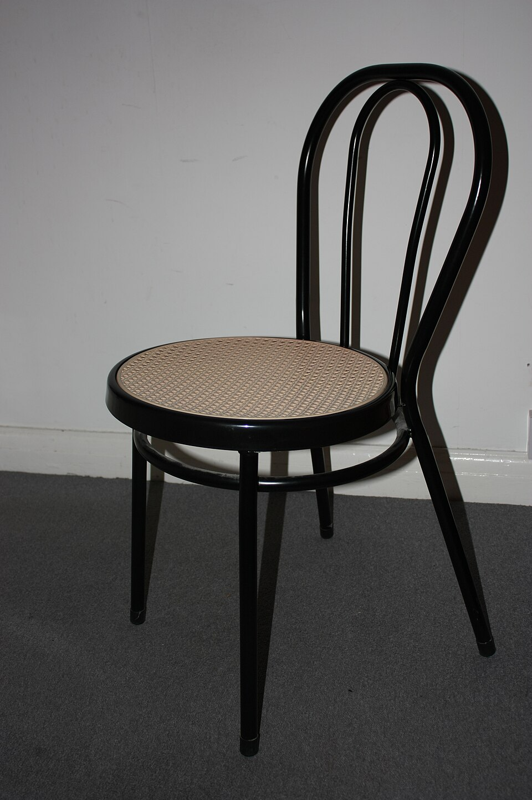
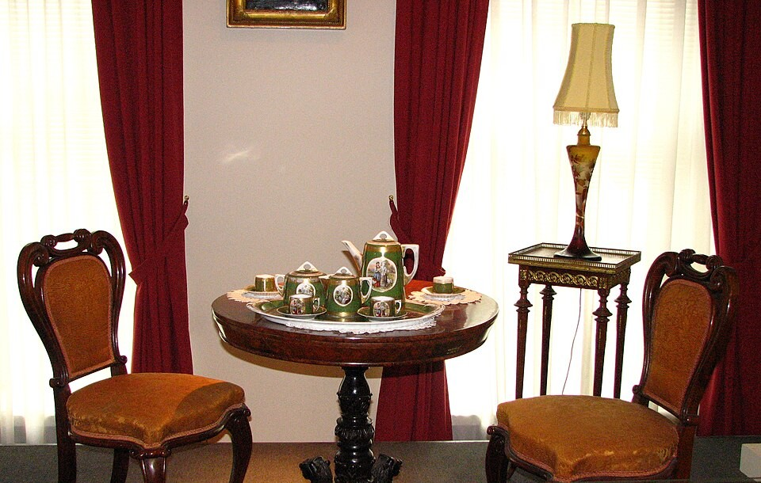
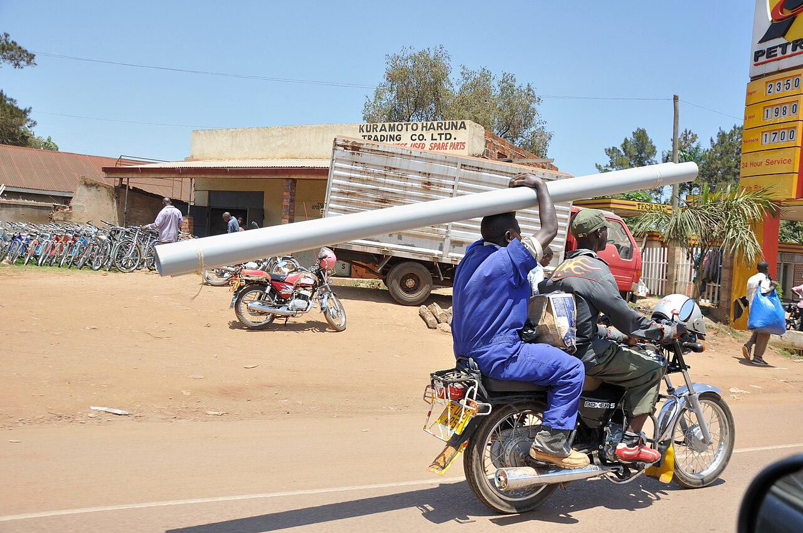

What is a chair?


Pointing and saying “chair” is easy. Marking every visible part is not. Where do the back and the legs end, and where does the next chair begin? Even a simple brightness threshold can find a seat and then merge the back with the neighboring chair. The output we ask for, a name, a box, or a mask, is a different problem.
Ideas from human vision
Irving Biederman, in 1987, argued that people cut unfamiliar objects into parts at the same places: the regions of sharp concavity. He proposed a vocabulary of about 36 three-dimensional primitives, geons. Recognition would detect edges, then properties that rarely arise by accident, then geons, then match the arrangement to something stored. A cup is a cylinder with a curved tube attached to the side. The parts and how they connect are the description.
The idea has limits. A chair leg and a table leg share properties, but they are not identical words from one dictionary. Geons fail on stuff with no fixed shape: clouds, grass, water. And they fail on things whose detail is the object, such as a plate of spaghetti.
Eleanor Rosch described categories at three levels. Furniture is superordinate. Chair is basic. Kitchen chair is subordinate. People name the basic level first. Boundaries are fuzzy: we often compare a new thing to the clearest examples, the prototypes. Context changes the meaning. A box can be used as a table.
When shape and texture disagree, people and models do not. Geirhos and colleagues built images with one object’s shape and another’s texture. Among decisions that matched either cue, people picked the shape 95.9% of the time. An ImageNet-trained ResNet-50 picked the texture 77.9% of the time. A single-label classifier has to choose one cue. People can describe both.
What we ask a model to output
The same street can be read at several rungs. Classification asks one question about the whole image. Detection adds a place: a box and a class for each object. Semantic segmentation labels every pixel. Instance segmentation separates one person from the next.
On Tom Mboya Street, a ResNet-18 gives one label for a frame full of objects. A detector such as YOLO returns many boxes. The single label was never going to describe the street.
If exactly one class is true, a softmax and cross-entropy are the usual training loss. If several classes can be present, one sigmoid per class and binary cross-entropy. The score we care about, whether the answer is right or wrong, is not a smooth function, so training uses a smooth stand-in.
Classification is also where the features for the other rungs come from. Train a classifier on ImageNet, keep the feature layers, throw away the last layer, and attach a new head for boxes or masks. Early layers are edges and color. If the new dataset is small, freeze the backbone and train only the head. If there is more data, or the pictures are a different kind of thing, fine-tune more layers. How much is chosen by trying it.
Finding the box, then labeling the pixels
Localization returns a set of boxes with classes. The usual recipe has three steps: propose candidate boxes, classify each patch, then remove the duplicates. Proposals have a history. Window scanning runs a classifier everywhere, over an image pyramid. Selective search proposes a few regions cheaply, then a stronger classifier checks only those. Cascades spend computation where an object is likely. YOLO looks at the whole image at once, and the book notes that it can be less accurate than some scanning methods and more efficient.
The cleanup is non-maximum suppression. Keep the highest-scoring box, and remove every other box whose overlap with it is above a threshold, often 0.5. Overlap is intersection over union: shared area divided by the union. Two unit squares shifted by half a side have an IoU of one third. Once the boxes stop overlapping, one minus IoU sits at 1 no matter how far apart they are, so there is no gradient. A distance loss does the opposite: double the box and the error, and the distance grows while IoU stays the same. Neither loss is simply better.
Boxes fit long, thin, or boundary-less things badly. Semantic segmentation drops the box and labels every pixel, often with an encoder-decoder such as SegNet, and cross-entropy summed over pixels. It can name stuff such as grass and sky. It cannot count two things that touch. Instance segmentation, as in Mask R-CNN, detects boxes first and then predicts a mask inside each box. The loss has a class term, a box term, and a mask term.
Solved as engineering, open as a question
Classification over a closed list of names, and boxes and masks for common categories, work well as engineering. They share a settled set of parts: a classifier, region proposals, a pixelwise classifier, and a way to score overlap.

Fine-tuning on a new task can overwrite what the network knew. That is catastrophic forgetting, described by McCloskey and Cohen in 1989. Related effects are representation drift, features shifting over time, and interference, new learning disrupting old.
All four tasks define objects through words. A robot that has to grasp something needs 3D shape and physical properties. A vehicle needs locations and motion. Naming is not the only question a recognition system should answer.
A number is only as good as the question
A benchmark fixes four things together: a dataset, a task, a metric, and a held-out test set. Shared ones shaped the field: PASCAL VOC, ImageNet, COCO for detection and masks, ADE20K for segmentation. In 2012 AlexNet cut ImageNet top-5 error from about 26% to about 15%, and the field moved to convolutional networks almost overnight.
A score is not a capability. On an easy set of clear cups, two models can both score 99%, so the test cannot separate them. ImageNet reached that kind of ceiling: a ResNet ensemble reached 3.57% error in 2015, past one expert annotator’s top-5 error of about 5%. Once images are ambiguous or mislabeled, the last few points measure the labels. Northcutt and colleagues estimate that at least 6% of ImageNet validation labels are wrong. Recht and colleagues rebuilt an ImageNet test set and accuracy dropped by 11 to 14 points; they say the drop came from slightly harder images, not from models memorizing the old test set. The cup scores on the slide are toy numbers.
Better questions can come from human vision. Squares A and B in the checker-shadow illusion are the same gray, and you see two surfaces, because vision discounts the shadow. A model that reports pixel gray and a model that reports surface color are answering different questions. A test built from a human finding can still miss. The cat-shaped image with elephant skin was used to say models lean on texture. Kim and colleagues asked 88 people whether they could even tell what those images show. Agreement, Fleiss’ kappa, was 0.73 for shape and only 0.29 for texture, where 1 is perfect agreement. Stylization mixes the two cues, and many images are hard to recognize. A hard-to-read picture is a weak test of shape against texture.
Three choices decide what we call progress. Are the labels the right question? Are we testing the right situations? Are we rewarding the behavior we meant? A label freezes one answer to an ambiguous question. Datasets have signatures: models can sometimes tell which dataset an image came from.
The lab is the handwritten-digits notebook on the course page. Finish it and submit the Colab link. Assignment 1 is due Wednesday, November 11, at 2pm. Read Konkle and Alvarez, 2022, for the start of the next class. The project idea is due Saturday night, and the detailed proposal on Tuesday night.